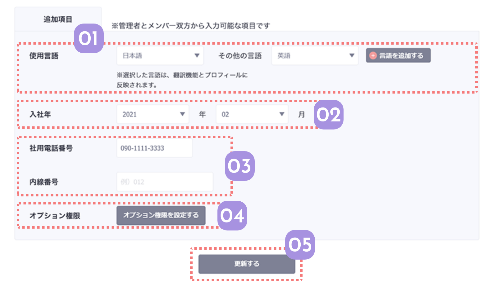

必須項目の登録が終わったら、追加項目の登録をしていきます。
ここで入力する情報はメンバーのプロフィールに反映されたり、会社データに反映されます。
メンバー登録やメンバー一覧からも入力できます。
オプション権限の設定以外は、従業員画面のプロフィールからメンバー本人が登録することもできます。

03
社用電話番号と内線番号を入力する
社用電話番号と内線番号を入力します。
社用電話番号を入力すると、Spotwriteのアプリからそのメンバーの番号に発信が可能になります。
 関連機能
関連機能

-
04
オプション権限を入力する
オプション権限とは、管理画面の操作やメンバーの分析結果を見ることを許可する管理者側の権限です。
Spotwriteの運営に関わるメンバーや、マネジメントに関わるメンバーにだけ付与する権限になります。